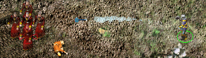
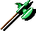
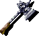
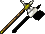
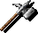
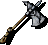
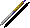
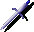
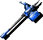
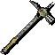

Introduction
In the Infinity Engine games, there are several war hammers that can be thrown, including the Dwarven Thrower +3 and Aegis-Fang. Although they are hammers, when they are thrown they actually appear as axes flying through the air instead of hammers. This modification adds animations so that thrown hammers appear as such rather than as axes. Any thrown hammers added by other mods will also get an appropriate animation.

An optional component adds a special animation to the Spiritual Hammer spell, shown above. Other optional components add normal throwing hammers, +1 throwing weapons, and a few magic items including Meraera's Dagger, Gethlun's Hammer, and the Essembra Hammer. They are unique items and will appear for sale in random stores if you install the magic item component.









•Back To Top
Compatibility
This mod works with any Infinity Engine game except PS:T. However, the new hammer projectiles will only appear for games based on the BG2 engine, since projectile identifiers seem to be hardcoded in other games. Make sure your game has the latest patch. Check the ReadMe files related to your patch in your game folder and the BioWare or Beamdog website if necessary.
This mod will also work with all mods, including Baldur's Gate Tutu (and EasyTutu), Baldur's Gate Trilogy, and Enhanced Edition Trilogy. Thrown Hammers is also compatible with the total conversion Classic Adventures. You can install this mod during an existing game, though you may miss some items unless you start a new game.
This mod should go after other mods that add or change hammers (including the Spiritual Hammer spell) and before final "biffing" routines. It should also go after mods that overwrite rather than patch game resources.
If you want the (few) weapons in this mod to take the "Sensible Weapon Restrictions" from Ashes of Embers, it doesn't matter whether you install Thrown Hammers before or after AoE. If you want the similar weapon tweaks in Level 1 NPCs, however, install the latter mod after Thrown Hammers.
•Back To Top
Installation
Note: If you've previously installed the mod, remove it before extracting the new version. To do this, run setup-hammers.exe (or .command), uninstall all previously installed components and delete the hammers folder. When installing or uninstalling, do not close the DOS window by clicking on the X button! Instead, press the Enter key when instructed to do so.
Important: If you wish to install any optional components, you must install them immediately after the main component so that WeiDU can interpret the new projectiles. If you decide to add optional components later, you must uninstall and reinstall the main component first.
You can extract files from the archive using WinRAR, 7-Zip, or another file compression utility that handles .rar files.
Windows
Extract the contents of the mod to the folder of the game you wish to modify. On successful extraction, there should be a hammers folder and a setup-hammers.exe file in your game folder. To install, simply double-click setup-hammers.exe and follow the instructions on screen.
Run setup-hammers.exe in your game folder to reinstall, uninstall, or otherwise change components.
Mac OS X
Extract the contents of the mod to the folder of the game you wish to modify. On successful extraction, there should be a hammers subfolder in your game folder. Download the OS X version of WeiDU (or copy another mod's launcher) and rename it setup-hammers. Put this and the setup-hammers.command file within the hammers subfolder into your main game folder. To install, double-click on setup-hammers.command and follow the instructions on screen.
Linux
Extract the contents of the mod to the folder of the game you wish to modify. Download the latest Linux version of WeiDU and copy WeiDU and WeInstall to /usr/bin. Then open a terminal and cd to your game's installation directory.
Optional: run 'tolower' and answer 'Y' to both queries. You can avoid running the second option (linux.ini) if you've already ran it once in the same directory. To save time, the archive is already tolowered, so there's no need to run the first option (lowercasing file names) either, if you've extracted only this mod since the last time you lowercased file names. If unsure, running tolower and choosing both options is the safe bet.
Run WeInstall setup-hammers in your game folder to install the mod. Then run wine BGMain.exe and start playing.
•Back to top
Components
All components require the main component, since it installs the hammer animations. All components are otherwise optional.
Thrown Hammers
This is the main component. It installs thrown hammer animations (blue, green, grey, brown, and orange variants). It also patches Aegis-Fang, the Dwarven Thrower, and any mod thrown hammers, with the new animations where relevant.
Thrown Spiritual Hammers
This component patches all Spiritual Hammer spell projectiles to throw bluish hammers that trail smoke and sparks.
Normal throwing hammers
This component installs normal (unmagical) throwing hammers in shops that sell throwing axes. These are fairly common.
+1 throwing weapons
This component installs +1 throwing hammers, axes, and daggers in shops that sell magical weapons and throwing weapons. These are fairly uncommon in most games and quite rare in Tutu/BG1.
Additional magic items
This component installs a handful of unique magic items in random shops. Most of these shops are not accessible until later in the game. The items include Meraera's Dagger, Gethlun's Hammer, the Essembra Hammer, and the Dwarven Thrower for Icewind Dale, Tutu and BG1.
•Back to top
Troubleshooting
These are some general tips if you have problems getting the game working, with or without this or other mods. Many times, errors have to do with the game engine itself or the manner of installation or gameplay. The game recommends deleting all files out of the /cache, /temp, and /tempsave subfolders in your game folder to see if that resolves the problem before any further troubleshooting.
Symptom: Game freezes or crashes to desktop (CTDs)
Sometimes the game displays an "assertion error" in a pop-up window when this happens, but often times it doesn't. To enable the full error message, open the file baldur.ini in your game folder with a text editor (such as Notepad). If you find you can't edit it or save changes in Windows Vista or later, see this topic for more information.
Under the [Program Options] section in the file, type Logging On=1 (unless it's already there). While you're there, you may also want to make sure Debug Mode=1 is there to enable the CLUA Console for debugging and testing. Save the file and exit. Now go back into the game and try to reproduce the crash. Then look in your game folder again for the Baldur.err file and open it with a text editor to analyze its contents.
Assertion failed in ChDimm.cpp at line #7641
Exp: pBiffHeader->dwFileType != mmioFOURCC('B', 'I', 'F', 'C')
Msg: c:\{path}\bg2\cd#\DATA\BIFNAME.BIF: attempted to use compressed BIF from CD, check free hard drive space
Sometimes, the referenced BIF will exist, but the game expects it to be in your main \data folder or in \cache\data. Copying it from the cd# folder (or the CD itself) will sometimes work. Other times, you may need to use DLTCEP to decompress the BIF. To do this, go to Extraction > Uncompress BIF. The decompressed BIF should end up in your main \data folder. Relaunch the game and see if this resolves the issue.
Other issues
If you have more than one large mod installed, please refer to the Megamod FAQ for more troubleshooting tips. If none of this resolves your issue, or you have mod-specific issues, please report the problem in the mod's forum. Include the contents of your WeiDU.log file in the post (please put it in [spoiler][/spoiler] tags!), or attach it if it's large.
•Back to top
Credits
Animations: Sam.
Coding: Miloch
Code contributions: K4thos and Sam.
Item ideas: Lord Delekhan
German translation: Rübezahl and Leomar
French translation: Le Marquis (of the d'Oghmatiques) and Gwendolyne
Spanish translation: Ancalagon el Negro
Italian translation: Stoneangel and ilot
Russian translation: prowler, noiseless, hawkmoon, and nikzy
Polish translation: yarpen and Lava Del'Vortel
Hosting: Spellhold Studios (Forums)
Programs/tools used in creation:
Thrown Hammers is copyright © 2010 by Miloch and Sam. This work (including all code and documentation) is licensed under a Creative Commons Attribution-Noncommercial 3.0 Unported License. You are free to share (copy, distribute and transmit) and to remix (adapt) this work, except for commercial purposes. See the Creative Commons Public License for more details. You may use this mod content in other mods with or without crediting the source (though credit is nice).
•Back to top
Version History
- Modified BAM trans and shadow colors to conform to standard
- Corrected errors in game+engine identification routines
- Corrected many description icon errors
- Ensure all BAMs are installed when used
- Throwing hammers now use proper ground icon
- Throwing hammers using Dwarven Thrower icon now use proper description icon
- SoD now uses dark themed description icons
- Improved BAM compression
- Other minor tweaks to code and content
- Added compatibility for EE-based games
- Updated French translation
Version 4.1: 15 Sep 2014
- Fixed a critical patching error on BG1 and IWD games
Version 4: 17 Aug 2014
- Updated Polish translation
- Updated WeiDU
Version 3: 31 Oct 2010
- Fixed a bug in spiritual hammers not appearing as ranged weapons properly
- Split "Thrown Spiritual Hammers" from the main component into a separate component
- Tweaked compatibility to allow optional components to be installed in separate batch sessions
Version 2: 1 Feb 2010
- Added German, French, Spanish, Italian and Russian translations
- Added compatibility for all IE games (except PS:T)
- Added Classic Adventures compatibility
- Added install order-independent Ashes of Embers compatibility
- Added component to make throwing hammers available at shops that sell throwing axes
- Added component to make +1 throwing weapons available at shops that sell magical projectiles
- Made extra magical items separate component
- Patched Spiritual Hammers and Aegis-Fang to add ranged abilities if not present
- Changed item names to avoid conflict with Dark Horizons
- Added compatibility with BGT/BWP and all mods
Version 1: 11 June 2008
•Back to top